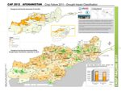
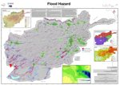
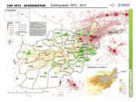
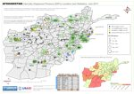
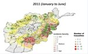
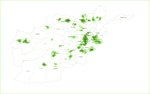

Afghanistan is a complex emergency situation, three decased of occupation and conflict have increased vulnerability and the current conflict has created further pressure, and restricted access for humanitarian organizations. On top of this, Afghanistan endures seasonal natural disasters with some areas snowed in for months and subject to avalanches, others flooding and others drought. There is also significant seismic activity in the Hindu Kush and the potential for large earthquakes.
The maps to the right show the coverage area of Internews partner local radio stations (most of which also broadcast the national Salam Watandar programming) in comparison with various aspects of the humanitarian situation in Afghanistan. The maps are provided as rough guides only, to highlight stations that could be targeted for staff training or as broadcasters of special programming.
Local radio stations can be effective providers of information to disaster-affected communities, but can also be facilitators of dialogue between those communities, government and international humanitarian agencies. Internews is part of the Communicating with Disaster Affected Communities (CDAC) initiative along with OCHA, the BBC WST and other agencies.
In the top series of maps, we are using the DevSeed system. The maps embedded here are hosted on mapbox, made up of several layers of compiled discrete data-driven maps. The maps were originally created using TileMill (some by us and some by other DevSeed users - WFP and UNHCR). One advantage of this approach is that new maps can be built out of different combinations of layers with a few mouseclick in the Mapbox online system. All you need is to get the data and create new maps/layers or find someone else who wants to do that with their data. The maps are scalable and interactive.
The bottom series of maps are old fashioned images. They also contain several layers, but these are hard-baked in an image-editing program such as Photoshop. Making these maps was very fiddly work, mostly in getting the different images of Afghanistan to line up on top of each other. They still tell a story, but have no interactivity, and are kind of hacked together. In these examples the humanitarian maps come from the IMMAP site.
Direct comparisons can be made between the maps showing IDP number and locations and the maps showing earthquake data.
In each map below radio station coverage areas are in green. For clarification, view a map showing only radio station coverage areas. All humanitarian maps are courtesy of IMMAP.
Crop Failure - Drought Impact Classification September 2011 Click image for large file |
Flood Hazard Click image for large file |
Earthquake History Click image for large file |
|||
IDP Locations Click image for large file |
Civilian Casualty Density (Jan-June 2011) Click image for large file |
Internews Established Radio Stations Coverage Areas Click image for large file |
{kind=link}
{kind=link}
{kind=link}
{kind=link}
{kind=link}
{kind=link}